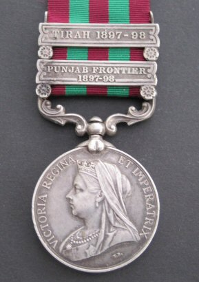
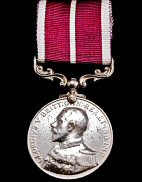
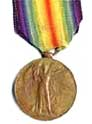
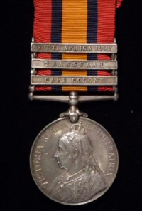

This is a record of the military service of Albert Warren MSM as recorded through unit histories and battalion diaries. He served two periods of enlistment which were very different times for Britain and her army. He joined for a 12-year tour of duty with the Derbyshire Regiment from 1893–1905. After a nine-year break he then re-enlisted at the outbreak of the First World War, serving with the 9th Royal Warwickshire Regiment, the 12th Duke of Cornwall's Light Infantry, the 13th Devonshire Regiment and the 170th Labour Company, Labour Corps.
The account is divided into the main periods of service.






- Derbyshire Regiment 1893–1905
- 9th Royal Warwickshire Regiment 1914–1915
- The Labour Battalions and the Labour Corps 1916–1919
Sources include: Extracts from 9th Royal Warwickshire War Diary; The Story of the Royal Warwickshire Regiment, C.L. Kingsford.